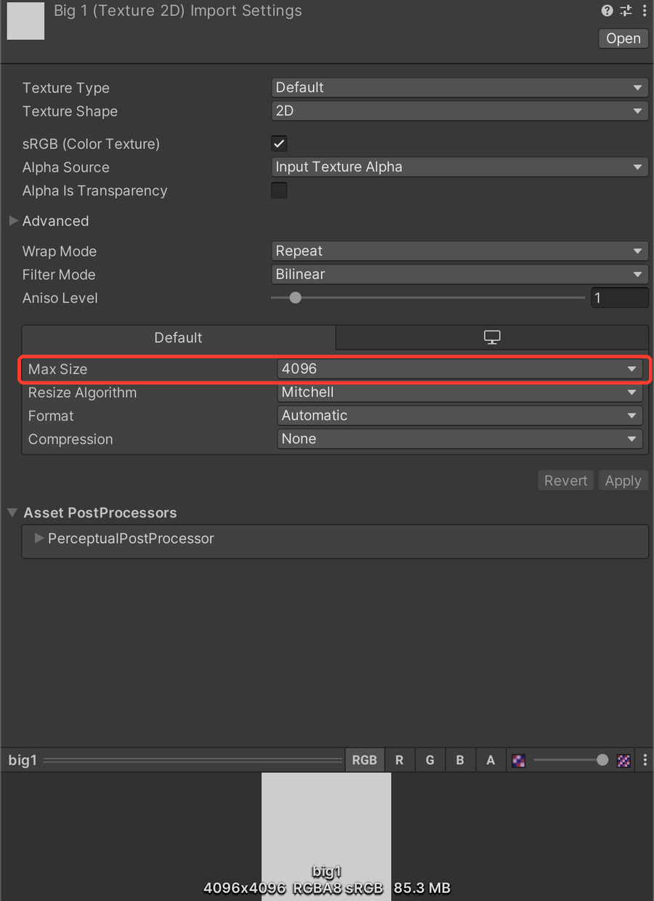

Images used for Actions & Moods are too large（メニューのアイコンが大きすぎる）
まずはこれ
- メニューに使っているアイコン画像を Project で選ぶ
- Inspectorで Max Size を 256、Compression を Normal Quality にする

自動で調べたいなら：改変おたすけ診断がこの設定を1クリックで見つけます（無料版あり）。無料で試す
画面に出る文字：
Images used for Actions & Moods are too large.
意味
Expressionsメニューのアイコン画像が大きすぎるか、圧縮されていません。256×256以下・圧縮ありでないとアップロードできません。
よくある原因
- 自分で作ったアイコン（大きいPNG）をメニューに足した
- 画像の設定で圧縮を None にしている
直し方
- メニューに使っているアイコン画像を Project で選ぶ
- Inspectorで Max Size を 256、Compression を Normal Quality にする
- Apply を押してからもう一度アップロード
直す前に、プロジェクトのフォルダを丸ごと複製しておくと安全です。
自動で見つけて直すならUnityのメニューから「診断する」を押すだけで、原因と直し方を日本語で一覧にする無料の道具があります（有料版は多くを1クリックで直します）。
この症状では：大きすぎる・圧縮なしのアイコンを一覧にし、有料版なら1クリックで256・圧縮ありにします。
改変おたすけ診断（無料版あり）
この症状では：大きすぎる・圧縮なしのアイコンを一覧にし、有料版なら1クリックで256・圧縮ありにします。
改変おたすけ診断（無料版あり）